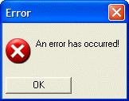

{IMAGE}
Syntax
{IMAGE= Image_Name }
|
Argument |
Type |
Description |
| Image_Name |
C |
The name of a built-in Alpha Anywhere bitmap, a bitmap that you have added to the current database (on the Code tab of the Control Panel ), one that you have loaded with UI_BITMAP_CREATE() , or the name of an image file on disk. |
Description
The {Image} command displays a bitmap (.BMP), cursor (.CUR), or icon (.ico) image. This command is to be used with transparent images.
Limitations
Desktop applications only
Example
In this example, we display the Windows error icon in a text box.
|
ui_dlg_box("Error",<<%dlg% {lf}; {image=$sys_error} An error has occurred! ; {lf}; <*15&OK> %dlg%)
|
This script produces this dialog:

In this example, we display an image file on disk.
|
ui_dlg_box("Error",<<%dlg% {lf}; {image=c:\myimages\imag1.png} This is an image from a disk file! ; {lf}; <*15&OK> %dlg%)
|
See Also
Xdialog Commands, {IMAGE_OPAQUE}, UI_BITMAP_CREATE()